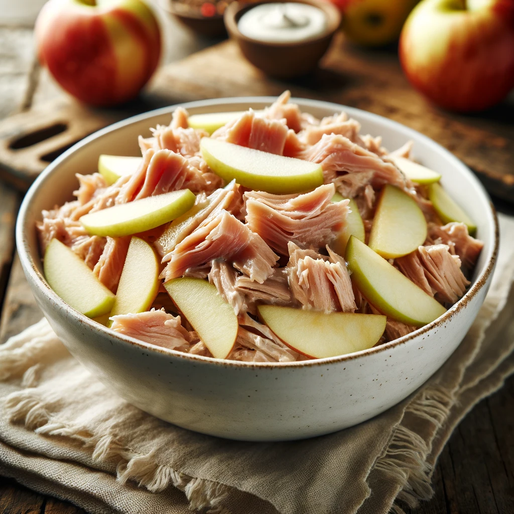

Tuna Salad

This classic dish can be served on it's own or as the filling for a sandwich.
This variant includes crisp green apples, but these can be replaced with cucumbers or other vegetables to taste.
Ingredients
- canned tuna in water
- light mayo
- 1 green apple
- lemon juice
Steps
- Drain the tuna and flake it with a fork.
- Dice the apple and toss it with a mixture of one tsp lemon juice and 1 cup water. Drain.
- Toss the tuna and apple in the light mayo until consistent.